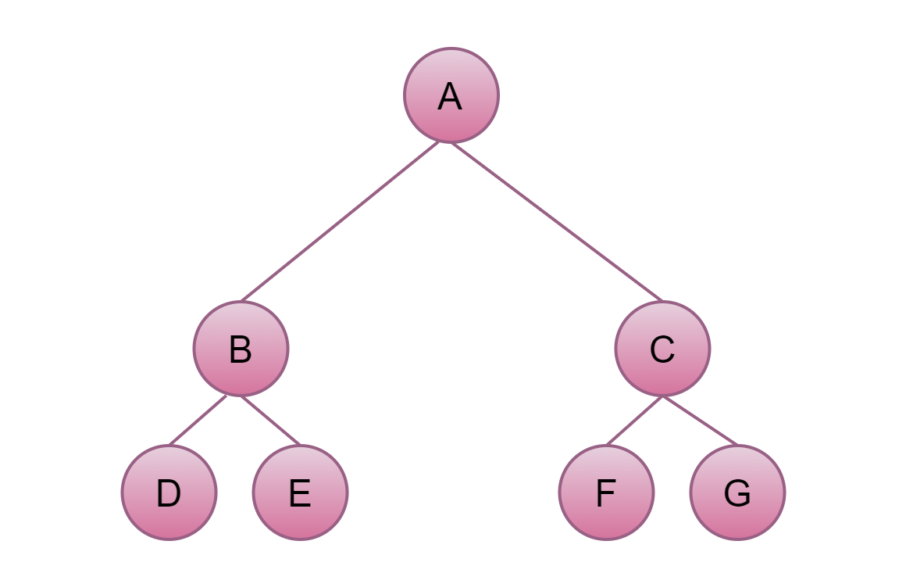
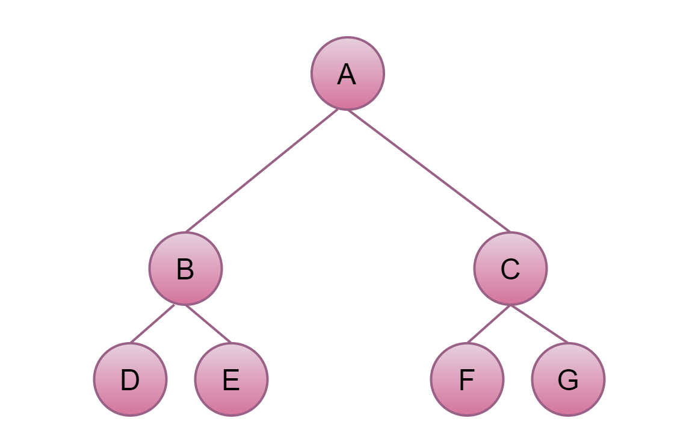
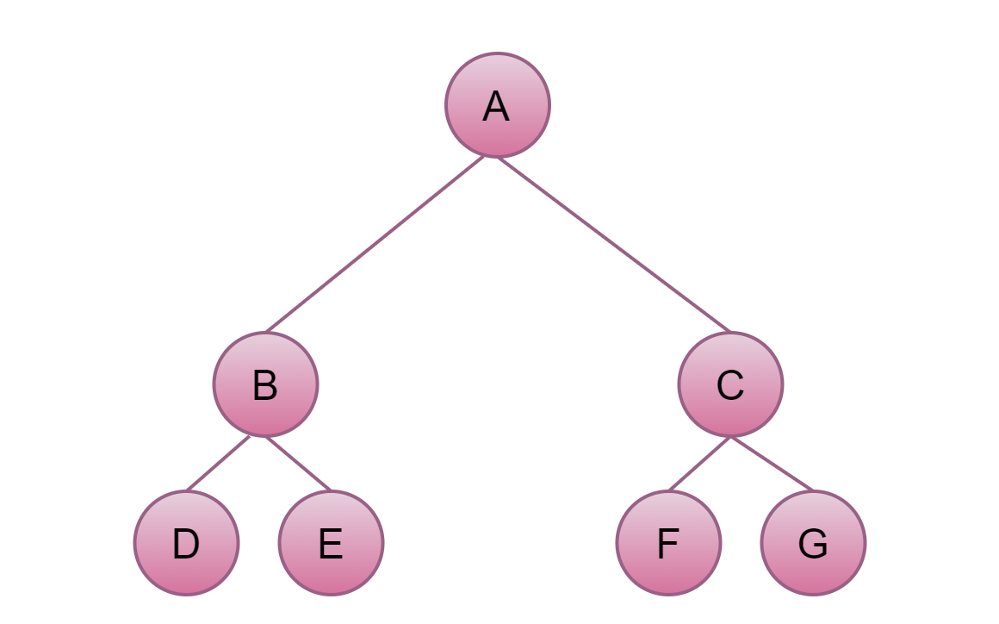
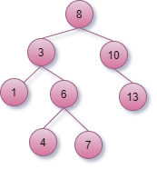

Frank Coelho de Alcantara -2020
Existem três formas principais e não únicas, de se percorrer uma árvore.
In-order é a primeira delas, percorremos os vértices de forma recursiva da esquerda para direita e de baixo para cima, começando na raiz.
Visitaremos: $D, B, E, A, F, C, G$
Primeiro a raiz depois o vértice da esquerda, depois o vértice da direita.
Visitaremos: $A, B, D, E, C, F, G$
A raiz é visitada por último, então vemos esquerda, direita, raiz.
Visitaremos: $D, E, B, F, G, C, A$
São árvores binárias com uma estrutura de criação ordenada.
A árvore a esquerda contém nós cujo valor é menor que o valor do nó raiz.
A árvore da direita contém nós cujo valor é maior que o valor do nó raiz.
A árvore mais simples é a árvore binária.
Busca, recursiva, começamos comparando o valor do nó raiz.
Se o valor procurado for menor, vamos para o nó da esquerda. E chamamos a busca recursivamente.
Se o valor for maior, vamos para o nó da direita. E chamamos a busca recursivamente.
Se o valor for igual, encontramos.
Se o nó for nulo, chegamos ao final da árvore e não encontramos.
Inserção, recursiva, começamos comparando o valor do nó raiz.
Se o valor a ser inserido for menor, vamos para o nó da esquerda. E chamamos a inserção recursivamente.
Se o valor a ser inserido for maior, vamos para o nó da direita. E chamamos a inserção recursivamente.
Se o valor for igual, não inserimos, ou chamamos a busca a direita.
Se o nó for nulo, inserimos o nó neste ponto.
Função Apagar, recursiva, começamos comparando o valor do nó raiz.
Se o valor a ser apagado for menor, vamos para o nó da esquerda. E chamamos a função Apagar recursivamente.
Se o valor a ser apagado for maior, vamos para o nó da direita. E chamamos a função Apagar recursivamente.
Fonte: Binary Search Tree(BST).
| Operação | Melhor | Médio | Pior |
|---|---|---|---|
| Busca | $O(log n)$ | $O(log n)$ | $O(n)$ |
| Inserir | $O(log n)$ | $O(log n)$ | $O(n)$ |
| Apagar | $O(log n)$ | $O(log n)$ | $O(n)$ |